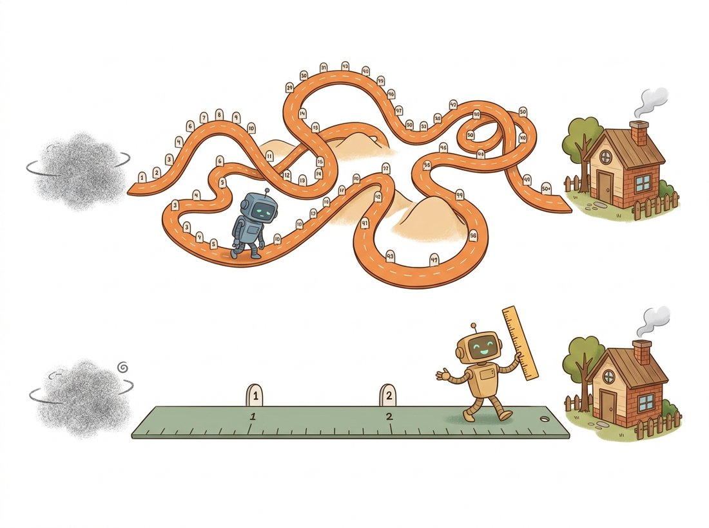

"Diffusion taught me to crawl from noise to data along a winding road. Flow matching handed me a ruler and said: why not walk in a straight line?"
A Velocity Field That Prefers the Shortest Path
Flow matching reframes generation as learning a velocity field that transports a simple noise distribution to the data distribution along a chosen path, and when you choose the straightest possible path, the resulting model both trains more simply than diffusion and samples in very few steps; consistency models go further and learn to jump to the path's endpoint in a single step. These 2022 to 2024 ideas do not replace the diffusion machinery so much as clarify and generalize it: diffusion is one particular probability path, and flow matching exposes the freedom to pick a better one. The straight-line paths of rectified flow are why Stable Diffusion 3 and FLUX sample well in a handful of steps, and consistency models are why one-step generation works at all.
The probability-flow ODE of Section 33.3 showed that a diffusion model is, at heart, an ODE whose velocity field carries noise to data, and Section 33.4 showed that the curviness of that field is what forces many sampling steps. The natural question is whether we can design a straighter field rather than inheriting the curved one that the diffusion forward process happens to produce. Flow matching answers yes, and gives a training objective for an arbitrary path that is simpler than the variational bound of Section 33.2. It is the modern descendant of the score-matching and energy-based view introduced in Chapter 30: where score matching learns the gradient of log-density, flow matching learns a velocity field directly, and the two meet in the probability-flow ODE. This section develops flow matching, specializes it to the straight-line rectified flow that modern systems use, and ends with consistency models, the most aggressive way to collapse the path to a single step.
1. Flow Matching: Learn the Velocity, Pick the Path Advanced
A continuous flow is defined by a time-dependent velocity field $v_\theta(x, t)$: to generate, you start at a noise sample $x_0 \sim \mathcal N(0, I)$ at time $t = 0$ and integrate $dx/dt = v_\theta(x, t)$ up to $t = 1$, landing on a data sample. Watch the subscripts here. Flow matching follows the convention that $t = 0$ is noise and $t = 1$ is data, so $x_0$ is the noise endpoint and $x_1$ is the data endpoint, the exact opposite of the diffusion chapters where $x_0$ was the clean image. Only the labels swap; the objects are the same. The question is how to train $v_\theta$ when we do not know the true velocity field. Flow matching's trick is to define the path between a specific noise sample $x_0$ and a specific data sample $x_1$ by a simple interpolation, and to regress the network onto the velocity of that conditional path, which we can compute. For the linear interpolation
The conditional flow matching loss simply asks the network to predict that velocity from the interpolated point and the time:
This is strikingly simple: draw a noise sample, draw a data sample, pick a random $t$, interpolate, and regress the network onto the constant velocity $x_1 - x_0$. There is no schedule of $\beta_t$, no variational bound, no closed-form posterior. A deep theorem (the one flow matching contributes) guarantees that minimizing this conditional objective also learns the correct marginal velocity field that transports the whole noise distribution to the whole data distribution. The same network you have been building all chapter, the time-conditioned U-Net or the transformer backbone of Chapter 22, plugs in unchanged; only the target and loss change. Figure 33.5.1 contrasts the curved diffusion path with the straight flow-matching path. The illustration below tells the same story as a journey: why wander a winding road when a ruler-straight one reaches the destination in a few strides?

The pair of functions below is the whole method: a loss that regresses the network onto the straight-line velocity, and a sampler that Euler-integrates the learned field from noise to data.
# Flow matching: train a velocity field on straight noise-to-data segments,
# then sample by Euler-integrating that field from t=0 (noise) to t=1 (data).
# There is no noise schedule and no variational bound, only a regression.
import torch
def flow_matching_loss(model, x1):
"""Conditional flow matching with linear (rectified-flow) paths.
x1 is a batch of real data; x0 is sampled noise."""
B = x1.size(0)
x0 = torch.randn_like(x1) # noise endpoint
t = torch.rand(B, *[1] * (x1.dim() - 1)) # uniform time, trailing 1s broadcast over image dims
xt = (1 - t) * x0 + t * x1 # straight-line interpolation
target_velocity = x1 - x0 # constant along the segment
pred = model(xt, t.view(B)) # flatten t to (B,) for the network; predict velocity
return ((pred - target_velocity) ** 2).mean()
@torch.no_grad()
def flow_sample(model, shape, steps=10):
"""Generate by Euler-integrating the learned velocity field from t=0 to t=1."""
x = torch.randn(shape)
dt = 1.0 / steps
for i in range(steps):
t = torch.full((shape[0],), i * dt)
x = x + model(x, t) * dt # straight Euler step
return xflow_matching_loss and flow_sample pair in full. The loss regresses the network onto the constant target_velocity $x_1 - x_0$ of a straight interpolation xt; flow_sample Euler-integrates that velocity from noise to data in ten steps. Note the absence of any noise schedule; this is the entire algorithm.2. Rectified Flow: Straightening the Path Further Advanced
The linear interpolation in subsection 1 is straight for each individual noise-data pair, but the marginal field the network learns averages over all pairings and is generally still curved, because a given noise point is pulled toward many possible data points. Rectified flow fixes this with a reflow procedure: after training a first flow, generate noise-data pairs by actually running it, then retrain on those self-generated pairs. Because the pairs are now the ones the model itself transports, the optimal coupling becomes more straight-line, and after one or two reflow rounds the marginal trajectories are nearly straight. A straight marginal field is the holy grail for sampling: a straight line is solved exactly by a single Euler step. This is the theoretical reason a well-rectified flow can generate in one or two steps with quality that a diffusion model needs dozens to match. The architecture and the U-Net or diffusion transformer (DiT) denoiser are unchanged; rectification is a training-procedure refinement layered on the flow-matching loss.
Reflow is the rare case where a model is told to study its own homework. You train a flow, make it generate noise-data pairs, then retrain it on those self-made pairs so the road it travels gets straighter each round. It sounds like the kind of bootstrapping that should collapse into nonsense, the way photocopying a photocopy degrades it; instead it converges, because each pass commits the model to a coupling it can actually transport in a straight line. The diffusion world's version of "fake it until you make it" turns out to have a convergence proof.
Put a number on why straightness is worth chasing. Start at the noise point $x_0$ and take a single Euler step all the way to $t = 1$, that is $\hat x_1 = x_0 + v_\theta(x_0, 0)\cdot 1$. If the trajectory is truly straight, its velocity is the constant $x_1 - x_0$ everywhere, so the one step gives $\hat x_1 = x_0 + (x_1 - x_0) = x_1$ exactly: the predicted image lands on the real data point with zero error, no matter how big the jump. Take that same single jump along the curved diffusion path of Section 33.4 and the constant-velocity assumption is wrong from the first instant, so the step shoots off the path and lands on a blurry non-image; this is the step-skipping cliff that forced dozens of steps in Section 33.4. Straightening the path does not merely reduce the error of a big step, it can drive it to zero. That is the whole reason a rectified-flow model such as Stable Diffusion 3 samples well in a handful of steps where DDPM needs dozens.
Flow matching reveals that the diffusion of Section 33.2 is not the only way, nor the best-conditioned way, to connect noise and data; it is one particular (curved) probability path among infinitely many. The DDPM forward process corresponds to a specific noise schedule that bends the trajectory; the linear interpolation of flow matching corresponds to a straighter one. Once you see generation as "learn the velocity field of some path from noise to data," the design freedom, which path, which coupling, which time weighting, becomes explicit, and choosing well is what separates a model that needs 50 steps from one that needs 4. This generalization is why the field's framing shifted from "diffusion models" to "flow-based generative models" between 2022 and 2024.
3. Consistency Models: One Step to the Endpoint Advanced
Flow matching and rectified flow make the path straight; consistency models attack the problem from the other end by learning the solution map of the ODE directly. A consistency model $f_\theta(x_t, t)$ is trained so that for any point $x_t$ along a probability-flow trajectory (from Section 33.3), it outputs the trajectory's endpoint, the clean data, regardless of $t$. The defining property is self-consistency: two points on the same trajectory must map to the same endpoint, $f_\theta(x_t, t) = f_\theta(x_{t'}, t')$. This is enforced by a loss that pushes the model's output at one timestep to agree with its output (from an exponential-moving-average, or EMA, copy of itself) at an adjacent timestep along the trajectory. The boundary condition $f_\theta(x_0, 0) = x_0$ anchors the map. Once trained, generation is a single network call: feed pure noise, get a sample. Multi-step sampling is also available, alternate denoising to the endpoint and re-noising, to trade a few extra steps for quality. Consistency models can be trained from scratch (consistency training) or distilled from a pretrained diffusion teacher (consistency distillation), and the latter is how the fast Stable Diffusion variants of Section 33.4 are made.
The reflow loop of rectified flow and the EMA self-consistency loss of consistency models are subtle to implement correctly, especially the EMA target update and the ODE-trajectory sampling for the consistency loss. The diffusers library ships the trained results as ready pipelines: FluxPipeline and StableDiffusion3Pipeline are rectified-flow models you can sample in a few steps, and LatentConsistencyModelPipeline plus the LCMScheduler give four-step consistency-model generation as a two-line load-and-call. For training, the library's flow-matching scheduler FlowMatchEulerDiscreteScheduler implements the straight-line sampling of subsection 1. This is hundreds of lines of training-loop and numerics replaced by a configured object; the from-scratch flow_matching_loss above is for understanding, the pipeline is for shipping.
Who: a concept-art studio generating reference images for game environments, 2024. Situation: their artists ran a latent diffusion model at 30 to 50 steps and generated dozens of variations per concept, with the wait between variations breaking creative flow. Problem: the step count was the bottleneck, and naive step reduction on their existing model collapsed quality, exactly the cliff described in Section 33.4. Decision: they migrated to a rectified-flow checkpoint (an SD3-class model) whose straightened trajectories held quality at far fewer steps, generating usable drafts in 4 to 8 steps and reserving a longer pass only for the chosen composition. Result: variation throughput multiplied, artists explored more of the design space per session, and the few-step drafts were good enough to make selection decisions without a slow render each time. Lesson: the path geometry is not an academic detail; a model trained with a straighter probability path delivers the same visual quality at a fraction of the steps, and for any workflow where iteration speed drives creative output, that geometry is the feature that matters.
Between 2023 and 2026, flow matching went from an alternative formulation to the default training recipe for frontier generators. Stable Diffusion 3 (Esser et al., 2024, arXiv:2403.03206) is a rectified-flow transformer, as are its Stable Diffusion 3.5 successors (October 2024, on the multimodal MMDiT backbone); the FLUX family from Black Forest Labs is flow-matching-based and set open-weight quality records, and its FLUX.2 release (November 2025) scaled the recipe to a roughly 32-billion-parameter flow-matching transformer. Meta's Movie Gen and several 2024 to 2026 video models (Chapter 36) use flow matching for its few-step sampling and clean scaling. On the consistency side, the improved consistency-training recipes of Song and Dhariwal (2024, arXiv:2310.14189) and consistency trajectory models narrowed the one-step quality gap, and latent consistency adapters made any Stable Diffusion checkpoint four-step-capable with a small LoRA (the low-rank adapter from Chapter 21 that fine-tunes a frozen network by adding a few trainable low-rank weight matrices). The newest unification, flow maps, learns a map between any two noise levels in one network call and so generalizes both flow matching and consistency models while staying effective across all step counts; the Align Your Flow work (Sabour, Fidler, and Kreis, 2025, arXiv:2506.14603) is the clearest statement of that direction. The throughline is that the straight-path and direct-endpoint ideas of this section are now the engine of real-time generation; if you build a new generator today, flow matching is the recipe you reach for first.
4. The Continuity Equation and Why Conditional Flow Matching Works Advanced
Subsection 1 asserted that regressing on the easy conditional velocity also learns the correct marginal field. That claim is the engine of the whole method, and it deserves a proof rather than a promise. The starting point is the object we actually want. We want a velocity field $v_t(x)$ whose flow carries the noise distribution at $t=0$ into the data distribution at $t=1$. "Carries one distribution into another" has a precise meaning: as we push the points of a density along the field, the density must evolve consistently, with no probability mass created or destroyed. That conservation law is the continuity equation,
read as: the rate at which density piles up at a point ($\partial_t p_t$) equals the net inflow of the probability current $p_t v_t$ (the negative divergence). A field $v_t$ is said to generate the path $p_t$ exactly when this equation holds. The flow itself is the trajectory of an individual particle under that field, the ODE
so $\phi_t$ is the map that slides each starting point along the velocity field up to time $t$, and the marginal $p_t$ is the law of $\phi_t(x_0)$ when $x_0$ is drawn from the prior. If we knew the true generating field $u_t$, the obvious objective would be the marginal flow matching loss
This is intractable: we have no closed form for the marginal target $u_t(x)$, because $p_t$ is a mixture over every possible data point and computing $u_t$ at a single $x$ would require integrating against the whole data distribution. The Lipman et al. (2023) construction sidesteps the marginal entirely. Build the marginal path as a mixture of simple conditional paths, one per data point $x_1$:
where each conditional path $p_t(\cdot \mid x_1)$ is something we design to be trivial, a Gaussian that starts as the prior at $t=0$ and concentrates on $x_1$ at $t=1$, with a known conditional velocity $u_t(x \mid x_1)$ that generates it. The key lemma is that the marginal field generating $p_t$ is the conditional-velocity average weighted by the posterior over which data point produced $x$:
This is verified by substituting the mixture into the continuity equation: the marginal current $p_t(x) u_t(x)$ equals $\int p_t(x\mid x_1) u_t(x\mid x_1)\, q(x_1)\, dx_1$, the mixture of conditional currents, and since each conditional pair $(p_t(\cdot\mid x_1), u_t(\cdot\mid x_1))$ satisfies its own continuity equation, the integral satisfies the marginal one by linearity. So $u_t$ is a conditional expectation of $u_t(x\mid x_1)$ over the posterior.
The reason the tractable loss can stand in for the intractable one is a single fact about least squares: the function that minimizes $\mathbb{E}\,\|v_\theta(x,t) - Y\|^2$ over a random target $Y$ is the conditional mean $\mathbb{E}[Y \mid x, t]$. In the marginal loss the target is $u_t(x)$; in the conditional flow matching loss
the target is the random $u_t(x \mid x_1)$. But by the lemma above, $\mathbb{E}[u_t(x \mid x_1) \mid x, t] = u_t(x)$, so both losses have the same minimizer and, expanding the squares, differ only by a term $\mathbb{E}\|u_t(x\mid x_1)\|^2 - \mathbb{E}\|u_t(x)\|^2$ that does not contain $\theta$. A constant in $\theta$ has zero gradient, hence $\nabla_\theta \mathcal{L}_{\text{CFM}} = \nabla_\theta \mathcal{L}_{\text{FM}}$ exactly. You never have to evaluate the intractable marginal target; regressing on the easy per-sample target descends the loss you actually care about. This is the same conditional-expectation trick that lets denoising score matching of Chapter 30 regress on a per-sample noise direction yet recover the marginal score.
5. Gaussian Conditional Paths and the OT Target Advanced
The lemma works for any family of conditional paths, so we get to choose the most convenient one. Pick a Gaussian conditional path that interpolates between the prior and a point mass on the data:
with the mean $\mu_t$ and standard deviation $\sigma_t$ chosen so that at $t=0$ the Gaussian is the standard prior and at $t=1$ it concentrates on $x_1$. We need the conditional velocity $u_t(x\mid x_1)$ that generates this Gaussian. A point on the path can be written as the reparameterization $x = \mu_t(x_1) + \sigma_t(x_1)\,\epsilon$ for a fixed standard-normal $\epsilon$; differentiating in time at fixed $\epsilon$ gives the velocity of that particle, $\dot x = \mu_t'(x_1) + \sigma_t'(x_1)\,\epsilon$. Eliminating $\epsilon = (x - \mu_t)/\sigma_t$ yields the closed-form conditional target
Each term is interpretable: the first scales the offset from the mean by the relative rate at which the Gaussian's width is changing (it contracts the cloud as $\sigma_t$ shrinks), and the second is simply the velocity of the mean itself. This single formula reproduces the targets of several known models depending on the schedule. The choice that yields the straightest individual trajectories, the optimal-transport (OT) path, takes the mean and width to be linear in time:
At $t=0$ this is $\mathcal{N}(0, I)$, the prior, and at $t=1$ it is $\mathcal{N}(x_1, \sigma_{\min}^2 I)$, a tight blob on the data point with a small floor $\sigma_{\min}$ that keeps the density well defined. Substituting $\mu_t' = x_1$ and $\sigma_t' = -(1-\sigma_{\min})$ into the general target gives
In the limit $\sigma_{\min} \to 0$ this collapses to $u_t(x\mid x_1) = (x_1 - x)/(1 - t)$, and along the path $x = (1-t)x_0 + t x_1$ the numerator $x_1 - x = (1-t)(x_1 - x_0)$ and denominator $1-t$ cancel to leave the constant $x_1 - x_0$. That recovers exactly the straight-line target of subsection 1: the linear interpolation and its constant velocity are the $\sigma_{\min}\to 0$ OT special case of the general Gaussian construction, now derived rather than asserted. The name "optimal transport" is earned because these straight, constant-speed conditional paths are the displacement-optimal interpolation between the two Gaussians under squared-Euclidean cost.
Take scalars $x_0 = 2$, $x_1 = -1$, and $\sigma_{\min} = 0$, and sample the midpoint $t = 0.5$. The path point is $x = (1-0.5)(2) + 0.5(-1) = 0.5$. The general formula gives $u_t(x\mid x_1) = (x_1 - x)/(1-t) = (-1 - 0.5)/0.5 = -3$, and the constant-velocity form gives $x_1 - x_0 = -1 - 2 = -3$. They agree, as the cancellation above guarantees, and the sign is correct: the particle at $x=0.5$ is moving left toward the data point at $-1$ at speed $3$, which over the remaining half-unit of time covers exactly the remaining distance $3 \times 0.5 = 1.5$ to land on $-1$.
6. Rectified Flow as the Linear Special Case Advanced
Rectified flow (Liu et al., 2022) arrives at the same straight-line objective from a transport-first viewpoint rather than a probability-path one, and the equivalence is worth making explicit. Given any coupling of a noise sample $x_0$ and a data sample $x_1$, define the linear interpolation and regress the network on its (constant) time derivative:
This is identical to the CFM loss with the OT path at $\sigma_{\min}=0$; the constant target $x_1 - x_0$ is the conditional velocity of the straight segment, and the conditional-expectation argument of subsection 4 again guarantees the learned marginal field transports the noise marginal to the data marginal. The distinctive contribution of rectified flow is what it does after this first fit. The marginal field learned from an arbitrary (typically independent) coupling is straight for each pair but curved on average, because a single noise point is regressed toward many different data points and learns their average direction, which bends. Reflow repairs this: simulate the trained ODE from many noise samples to obtain the data points it actually produces, forming a new deterministic coupling $(x_0, \Phi(x_0))$, then refit the linear objective on these self-generated pairs. The new coupling never sends two trajectories through the same point in different directions, so its marginal interpolant has lower transport cost and is provably straighter; iterating drives the trajectories toward genuinely straight lines that a single Euler step solves exactly. One reflow round is usually enough to make few-step sampling work, and the procedure is the reason the title of the paper is "Flow Straight and Fast."
Given a trained consistency model $f_\theta(x, t)$ with boundary time $\epsilon$, a prior scale $T$, and (for multi-step) a decreasing sequence of times $T = \tau_1 > \tau_2 > \cdots > \tau_{K-1} > \epsilon$:
- One-step. Draw $\hat x_T \sim \mathcal{N}(0, T^2 I)$ from the prior and return $x \leftarrow f_\theta(\hat x_T, T)$. A single network call maps the noise straight to the trajectory endpoint.
- Multi-step (alternate denoise and re-noise). Draw $\hat x_T \sim \mathcal{N}(0, T^2 I)$ and set $x \leftarrow f_\theta(\hat x_T, T)$.
- For $k = 1, 2, \dots, K-1$:
- Re-noise the current estimate back onto the path at level $\tau_k$: draw $z \sim \mathcal{N}(0, I)$ and form $\hat x_{\tau_k} \leftarrow x + \sqrt{\tau_k^2 - \epsilon^2}\; z$.
- Project to the endpoint again: $x \leftarrow f_\theta(\hat x_{\tau_k}, \tau_k)$.
- Return $x$. Each extra round trades one network call for refinement; two to four steps typically close most of the quality gap to the teacher while remaining far cheaper than diffusion.
7. Consistency Models: Parameterization and the Distillation Loss Advanced
Subsection 3 described self-consistency in words; here is the construction that makes it trainable. A consistency model must satisfy two requirements simultaneously, and naive networks satisfy neither for free. First, the boundary condition: at the smallest time $\epsilon$ the map must be the identity, $f_\theta(x, \epsilon) = x$, because a point already at the trajectory's clean end has nothing left to denoise. Second, self-consistency across the trajectory, $f_\theta(x_t, t) = f_\theta(x_{t'}, t')$ for any two times on the same probability-flow ODE path of Section 33.3. The boundary condition is enforced by construction through the parameterization
where $F_\theta$ is the raw network. The skip coefficient $c_{\text{skip}}$ carries the input straight through and the output coefficient $c_{\text{out}}$ scales the network's correction; at $t=\epsilon$ the constraints force $f_\theta(x,\epsilon) = 1\cdot x + 0\cdot F_\theta = x$ automatically, no matter what $F_\theta$ outputs. Away from the boundary $c_{\text{skip}}$ falls and $c_{\text{out}}$ rises so the network does the work. This is the same skip-plus-output design used by the EDM preconditioning of Section 33.4, reused here to bake in the identity at $\epsilon$ rather than to normalize the loss scale.
Self-consistency is then trained, not constructed, by a loss that ties the model's outputs at two adjacent points on the same trajectory. Take a fine time grid $\epsilon = t_1 < t_2 < \cdots < t_N = T$. Draw a data point, noise it to level $t_{n+1}$ to get $x_{t_{n+1}}$, and take one ODE solver step backward to the adjacent level $t_n$ using the probability-flow field (the teacher's score in distillation), producing $\hat x_{t_n}$. The consistency distillation loss asks the model at $t_{n+1}$ to match a frozen copy of itself at the neighboring $t_n$:
where $d(\cdot, \cdot)$ is a distance (squared $\ell_2$, $\ell_1$, or LPIPS), $\lambda(t_n)$ is a positive per-step weight, and $\theta^- = \text{stopgrad}\big(\text{EMA}(\theta)\big)$ is a target network that is the exponential moving average of $\theta$ with the gradient detached. Three design choices make this work. The target $\hat x_{t_n}$ is produced by one ODE step from $x_{t_{n+1}}$, so the two arguments lie on a common trajectory and self-consistency is exactly what the loss measures. The stop-gradient prevents the trivial collapse in which the model drives both sides to a constant. The EMA target supplies a slowly moving, stable regression goal, the same stabilization idea as the target networks of value-based reinforcement learning. Because the boundary condition pins $f_\theta(\cdot,\epsilon)$ to the identity and the data point is the true endpoint at $t_1=\epsilon$, the chain of pairwise agreements propagates the correct endpoint all the way up the trajectory: minimizing $\mathcal{L}_{\text{CD}}$ to zero makes $f_\theta(x_t, t)$ return the trajectory's clean endpoint from any $t$, which is precisely the one-step generator. Consistency training replaces the teacher's ODE step with an unbiased single-sample estimate of the score, removing the need for a pretrained model at the cost of a noisier target.
# Rectified-flow training step and Euler ODE sampling, with the explicit
# constant target x1 - x0. Convention: t=0 is noise, t=1 is data.
import torch
def rectified_flow_step(model, x1, opt):
"""One optimization step of the rectified-flow / CFM-OT objective."""
x0 = torch.randn_like(x1) # noise endpoint x0 ~ N(0, I)
t = torch.rand(x1.size(0), *[1] * (x1.dim() - 1)) # uniform t in [0, 1)
xt = (1 - t) * x0 + t * x1 # linear interpolation point
target = x1 - x0 # constant velocity of the segment
pred = model(xt, t.view(x1.size(0))) # network predicts the velocity
loss = ((pred - target) ** 2).mean() # least-squares -> learns marginal field
opt.zero_grad(); loss.backward(); opt.step()
return loss.item()
@torch.no_grad()
def euler_sample(model, shape, steps=4):
"""Sample by Euler-integrating dx/dt = v_theta(x, t) from t=0 to t=1."""
x = torch.randn(shape) # start at noise
dt = 1.0 / steps
for i in range(steps):
t = torch.full((shape[0],), i * dt)
x = x + model(x, t) * dt # straight Euler step
return x # lands near the data manifoldrectified_flow_step regresses the network onto the constant velocity $x_1 - x_0$ of the straight interpolation; euler_sample integrates the learned field with as few as four steps. After one reflow round (refitting on self-generated pairs), even steps=1 produces usable samples because the trajectory is then nearly straight.Stable Diffusion 3 (Esser et al., 2024, arXiv:2403.03206) is the clearest demonstration that flow matching is the dominant 2024-plus recipe. Its latent path is the rectified-flow interpolation $z_t = (1 - t)\, x_0 + t\, \epsilon$ between a data latent $x_0$ and noise $\epsilon$, trained with the constant-velocity objective of subsections 1 and 6. (Note SD3 uses the opposite endpoint convention to this section, with $t=0$ data and $t=1$ noise; only the labels differ.) Two engineering choices made it scale. First, instead of sampling the training time $t$ uniformly, SD3 draws it logit-normally, $t = \text{sigmoid}(u)$ with $u \sim \mathcal{N}(m, s^2)$, which concentrates training on the middle timesteps where the velocity is hardest to predict and the interpolation is most ambiguous, while spending fewer samples on the near-noise and near-data ends that are nearly trivial. Second, the backbone is MM-DiT, a multimodal diffusion transformer that gives text and image tokens separate weight streams and lets them interact only through joint attention, so each modality keeps its own representation while still conditioning on the other. The same flow-matching core powers the FLUX family and the SD3.5 successors, confirming that the straight-path objective developed in this section, not the diffusion variational bound, is the foundation of current frontier image generators.
The Euler ODE step is $x_{t+\Delta t} = x_t + v_\theta(x_t, t)\,\Delta t$. Explain in two or three sentences why, if the trajectory from noise to data is exactly a straight line with constant velocity, a single Euler step with $\Delta t = 1$ reaches the endpoint with zero error, whereas a curved trajectory accumulates error. Connect this to the reflow procedure of subsection 2 and to the step-skipping failure of Section 33.4.
Reuse the 2D crescent-moons dataset and MLP from Section 33.1, but train it with the flow_matching_loss above instead of the DDPM loss (the network now predicts velocity, not noise). Sample with flow_sample at 50, 10, 4, and 1 steps, plotting each. Compare the 4-step and 1-step flow-matching results to the DDPM model's quality at the same step counts and report which degrades more gracefully.
Consistency models can be obtained by consistency training from scratch or by consistency distillation from a diffusion teacher, and the progressive distillation of Section 33.4 is a third route to few-step models. Write a short comparison (one to two paragraphs) of when each is preferable, addressing whether a pretrained teacher exists, total compute, and the quality ceiling. Conclude with which approach you would pick if you already had a strong 50-step latent diffusion model and wanted 4-step generation, and justify the choice.
Let $u_t(x) = \mathbb{E}_{x_1 \sim p(x_1 \mid x, t)}[\, u_t(x \mid x_1)\,]$ be the marginal velocity, as derived in subsection 4. Starting from the conditional flow matching loss $\mathcal{L}_{\text{CFM}} = \mathbb{E}_{t, x_1, x}\| v_\theta(x,t) - u_t(x\mid x_1)\|^2$, expand the square and use the tower property of conditional expectation to show that $\mathcal{L}_{\text{CFM}} = \mathcal{L}_{\text{FM}} + C$, where $\mathcal{L}_{\text{FM}} = \mathbb{E}_{t, x}\| v_\theta(x,t) - u_t(x)\|^2$ and $C = \mathbb{E}\,\|u_t(x\mid x_1)\|^2 - \mathbb{E}\,\|u_t(x)\|^2$ does not depend on $\theta$. Conclude that $\nabla_\theta \mathcal{L}_{\text{CFM}} = \nabla_\theta \mathcal{L}_{\text{FM}}$, and state in one sentence why this is exactly the least-squares "the minimizer is the conditional mean" fact.
For the OT Gaussian path with $\mu_t(x_1) = t x_1$ and $\sigma_t(x_1) = 1 - (1-\sigma_{\min})t$, the conditional density is $p_t(x\mid x_1) = \mathcal{N}(x; \mu_t, \sigma_t^2 I)$. Compute the conditional score $\nabla_x \log p_t(x\mid x_1) = -(x - \mu_t)/\sigma_t^2$ and the conditional velocity $u_t(x\mid x_1) = (\sigma_t'/\sigma_t)(x - \mu_t) + \mu_t'$ from subsection 5. Show algebraically that they are an affine reparameterization of each other, $u_t(x\mid x_1) = a(t)\,\nabla_x \log p_t(x\mid x_1) + b(t)\, x + c_t(x_1)$, and identify $a(t)$, $b(t)$, and $c_t(x_1)$. Explain in two or three sentences why this equivalence means a flow-matching model and a score model are two parameterizations of the same probability-flow ODE field of Section 33.3, so either can be converted to the other after training.
Sample $x_1$ from a 2D target (two Gaussian blobs or the crescent moons of Section 33.1) and train a small MLP velocity field with the rectified_flow_step of Code Fragment 2. (1) After the first fit, sample 30 noise points and plot their full ODE trajectories from euler_sample with many steps; observe that the paths are visibly curved and some cross. (2) Run one reflow round: generate deterministic $(x_0, \Phi(x_0))$ pairs by simulating the trained model, then refit the same objective on those pairs. (3) Re-plot the trajectories and confirm they are now nearly straight and non-crossing. (4) Compare sample quality at steps = 50, 4, 1 before and after reflow, and report how much the 1-step result improves. State the measured straightness gain (for example, mean trajectory length divided by straight-line endpoint distance, which should approach 1 after reflow).